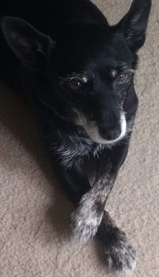
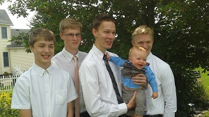

I was born in Hamilton, Ohio. I have lived most my life in Ohio and lived a few years in Georgia. I am the fourth of five kids and have one dog, named Cricket.

She is kind of a rascal
I have two nephews and two of my older siblings are married.

Me with my brothers and one of my nephews
I decided to come out to BYU because I wanted to be around people with similar standards and experiences. I currently have not decided on a major. I plan to head out to be a missionary for the Church of Jesus Christ of Latter-day Saints this summer. After that I plan to return to BYU and hopefully by then I will know what to study.
I like to longboard, play basketball and volleyball, run, and hangout with friends. I also enjoy wildlife and the outdoors and would like to visit Africa someday. So here is a video about African Wildlife.